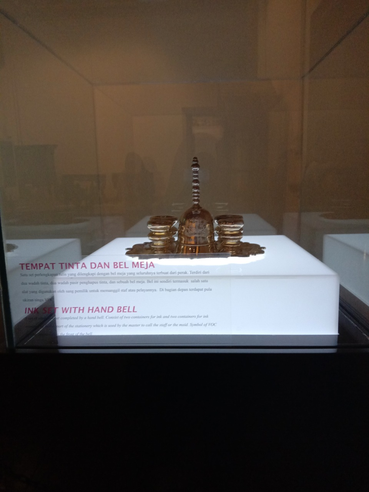
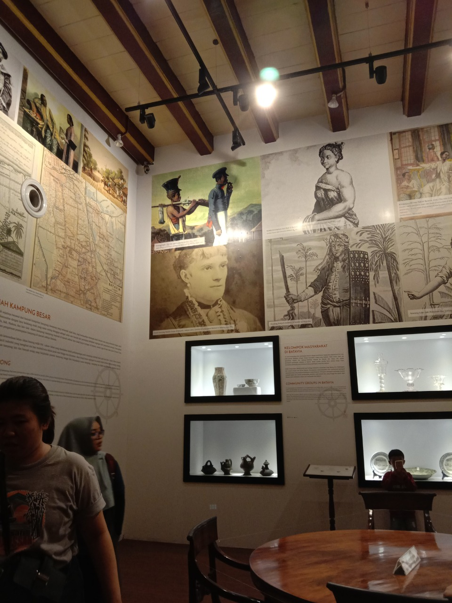
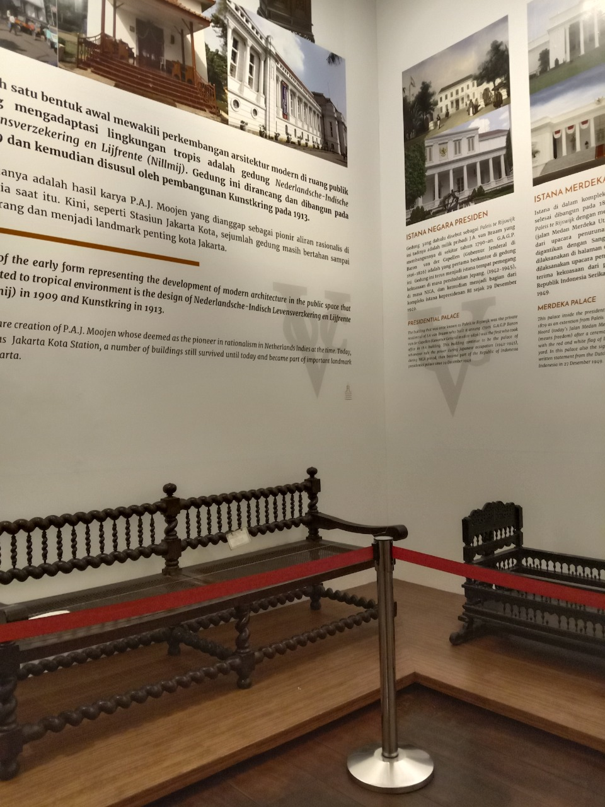

Warga Jakarta dan sekitarnya pasti sudah tahu tentang MUSEUM FATAHILAH, Museum yang berada di jalan Taman Fatahilah No 1 Pinangsari, Kecamatan Taman Sari, Kota Jakarta Barat ini sangat ramai setiap harinya apa lagi saat wekend. Pada tanggal 14 Desember 2019, musium Fatahilah memperpanjang jam buka musium sampai dengan jam 20:00 WIB,itu menjadi sasaran empuk para pengunjung kota tua, yang sedang menonton pertunjukan di depan gedung museum. Termasuk saya dan teman saya, kita masuk musium dengan membayar tiket sebersar Rp 10.000/orang, antrian masuk lumayan panjang tapi tidak sampai berdesakan. Kebanyakan dari penggunjung adalah sepasang muda-mudi yang sedang menikmati malam minggunya.
 Saat masuk kita langung disambut oleh penjaga musium yang akan mengarahkan kita ke jalur masuk. Ruangan pertama yang kita masuki adalah ruangan dengan lukisan Raden Saleh, kemudian disisi ruangan terdapat batu besar. Masih di lantai 1, terdapat beberapa batu dan perhiasan yang masih terawat dengan baik
Didalam kita tidak di perbolehkan menyentuh apapun yang ada didalam ruangan tersebut. Namun kita, diperbolehkan untuk berfoto ataupun mengambil gambar. Seperti pada foto berikut.
Di lantai 2, kita bisa melihat berbagai macam penginggalan lain seperti lemari dan meja. Ada juga sebuah kaca
besar yang dapat di salah satu sudut ruangan. Dikaca itu terdapat sebuah kisah misteri yang terselip.
Konon katanya saat kita mengarahkan padangan kita kekaca itu kita bisa melihat sosok hantu belanda yang
sedang menatap kita juga.

Tapi kebenaran dari cerita tersebut belum di ketahui kebenarannya. Jendela musium lantai 2 juga dibuka.
Jendela yang menampilkan indahnya bangunan peninggalan Belanda itu terlihat lebih indah
saat malam hari, karna pantulan cahaya warna-warni dari bangunan tersebut
Setelah dari lantai 2 kami diarahkan menuju pintu keluar. Kami melewati ruangan yang di dalamnya terdapat
patung-patung peninggalan kerajaan Taruman negara. Disamping pintu keluar terdapat bangungan penjara bawah
tanah. Kami memberanikan diri masuk kedalamnya, rasanya sumpek dan pengap disana.
Keluar dari penjara bawah tanah itu kami beristirahat dan membeli minuman disana. Ini sangat sesuai untuk
kalian yang tidak ingin terlalu repot membawa bekal, karna tepat sebelum keluar dari museum kita perkenankan
untuk membeli makanan dibeberapa outlet yang ada disana. Bukan hanya makana disana juga terdapat
toko sofenir yang menjual pernak pernik museum fatahilah.
Wisata malam di museum sangatlah menyenangkan, selain bisa berwisata kita juga bisa belajar sejarah disana.
Walaupun saat malam tidak semua ruangan di buka, dan masih banyak beberapa materi sejarah yang dirasa cukup
tidak efektif jika berada di dalam museum itu. Terkesan tidak serasi dengan tema.
Untuk kebersihan museum juga sangat dijaga, bahkan terlihat seperti tidak ada sampah disana. Nah, untuk
readers yang ingin berwiata di kota tua kalian bisa mengunjungi tempat-temat bersejarah lainnya seperti
museum wayang, pasar kota tua, museum bank BNI, juga jajanan kaki lima.
Saran dariku kalian mengunakan transportasi transjakarta karena kalian bisa merasakan halte bawah tanah kota
tua, ya walaupun saat wekend harus sabar karna berdesakan